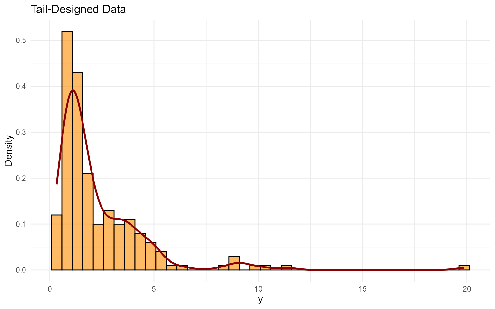
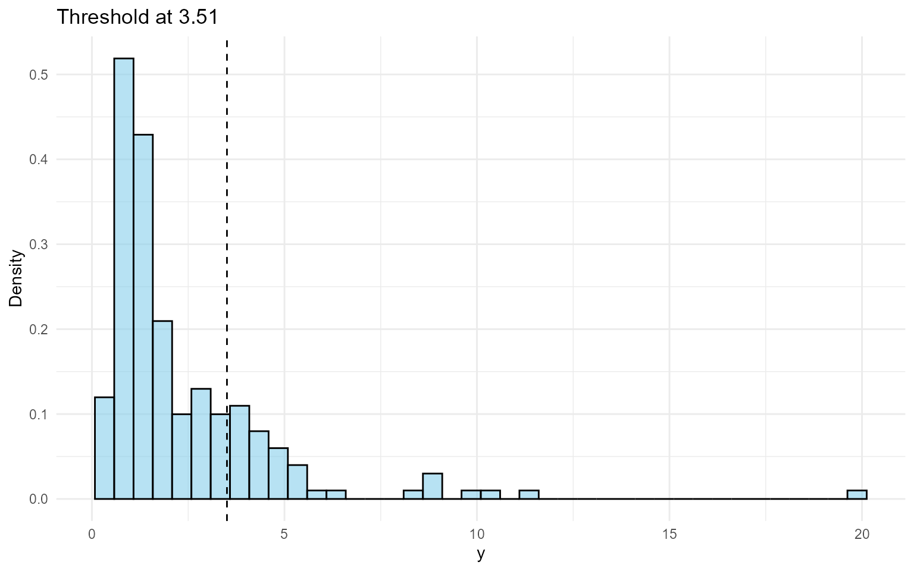

9. Unconditional DPmixGPD with Stick-Breaking Backend
Source:vignettes/workflows/v09-unconditional-DPmixGPD-SB.Rmd
v09-unconditional-DPmixGPD-SB.RmdLegacy vignette (for the website / historical notes). These files may not match the current exported API one-to-one. Last verified: 2026-01-18.
For the up-to-date workflow, see the main package vignettes (Introduction, Model Spec, MCMC Workflow, Unconditional/Conditional/Causal, Backends, S3 Reference).
Unconditional DPmixGPD: Stick-Breaking (SB) Backend with Tail Augmentation
Purpose: Demonstrate the stick-breaking backend
(components = J) while augmenting the extreme tail with a
GPD. This mirrors the CRP+GPD pipeline (v06) but highlights the
fixed-truncation behavior for bulk components.
Data Setup
# Tail-heavy data
data("nc_pos_tail200_k4")
y_tail <- nc_pos_tail200_k4$y
summary_tbl <- tibble(
statistic = c("N", "Mean", "SD", "Min", "Max"),
value = c(length(y_tail), mean(y_tail), sd(y_tail), min(y_tail), max(y_tail))
)
df_data <- data.frame(y = y_tail)
p_raw <- ggplot(df_data, aes(x = y)) +
geom_histogram(aes(y = after_stat(density)), bins = 40, fill = "darkorange", alpha = 0.6, color = "black") +
geom_density(color = "darkred", linewidth = 1) +
labs(title = "Tail-Designed Data", x = "y", y = "Density") +
theme_minimal()
grid.arrange(p_raw, ncol = 1)
| statistic | value |
|---|---|
| N | 200.000 |
| Mean | 2.334 |
| SD | 2.300 |
| Min | 0.328 |
| Max | 19.870 |
Threshold Selection
thresholds <- quantile(y_tail, c(0.70, 0.75, 0.80, 0.85))
u_threshold <- thresholds["80%"]
ggplot(df_data, aes(x = y)) +
geom_histogram(aes(y = after_stat(density)), bins = 40, fill = "skyblue", alpha = 0.6, color = "black") +
geom_vline(xintercept = u_threshold, linetype = "dashed", color = "black") +
labs(title = paste("Threshold at", round(u_threshold, 2)), x = "y", y = "Density") +
theme_minimal()
Model Specification & Bundle
This follows the same structure as the SB bulk-only vignette
(v05): build a bundle with
build_nimble_bundle(), run MCMC, then use the S3
predict() + if (interactive()) plot() helpers.
Compared with v06 (CRP+GPD), here we keep the
stick-breaking backend and use a Gamma
bulk kernel with a lognormal threshold prior, then contrast it with a
bulk-only Laplace fit.
bundle_sb_gpd <- build_nimble_bundle(
y = y_tail,
kernel = "gamma",
backend = "sb",
GPD = TRUE,
components = 5,
param_specs = list(
gpd = list(
threshold = list(
mode = "dist",
dist = "lognormal",
args = list(meanlog = log(max(u_threshold, .Machine$double.eps)), sdlog = 0.25)
)
)
),
mcmc = mcmc
)Running MCMC
fit_sb_gpd <- load_or_fit("v09-unconditional-DPmixGPD-SB-fit_sb_gpd", run_mcmc_bundle_manual(bundle_sb_gpd))
summary(fit_sb_gpd)MixGPD summary | backend: Stick-Breaking Process | kernel: Gamma Distribution | GPD tail: TRUE | epsilon: 0.025
n = 200 | components = 5
Summary
Initial components: 5 | Components after truncation: 2
WAIC: 608.177
lppd: -237.339 | pWAIC: 66.75
Summary table
<table class="table" style="width: auto !important; margin-left: auto; margin-right: auto;">
<thead>
<tr>
<th style="text-align:center;"> parameter </th>
<th style="text-align:center;"> mean </th>
<th style="text-align:center;"> sd </th>
<th style="text-align:center;"> q0.025 </th>
<th style="text-align:center;"> q0.500 </th>
<th style="text-align:center;"> q0.975 </th>
<th style="text-align:center;"> ess </th>
</tr>
</thead>
<tbody>
<tr>
<td style="text-align:center;"> weights[1] </td>
<td style="text-align:center;"> 0.549 </td>
<td style="text-align:center;"> 0.088 </td>
<td style="text-align:center;"> 0.365 </td>
<td style="text-align:center;"> 0.56 </td>
<td style="text-align:center;"> 0.7 </td>
<td style="text-align:center;"> 41.76 </td>
</tr>
<tr>
<td style="text-align:center;"> weights[2] </td>
<td style="text-align:center;"> 0.27 </td>
<td style="text-align:center;"> 0.084 </td>
<td style="text-align:center;"> 0.135 </td>
<td style="text-align:center;"> 0.255 </td>
<td style="text-align:center;"> 0.445 </td>
<td style="text-align:center;"> 45.304 </td>
</tr>
<tr>
<td style="text-align:center;"> alpha </td>
<td style="text-align:center;"> 1.4 </td>
<td style="text-align:center;"> 0.934 </td>
<td style="text-align:center;"> 0.323 </td>
<td style="text-align:center;"> 1.159 </td>
<td style="text-align:center;"> 3.82 </td>
<td style="text-align:center;"> 62.321 </td>
</tr>
<tr>
<td style="text-align:center;"> tail_scale </td>
<td style="text-align:center;"> 1.93 </td>
<td style="text-align:center;"> 0.688 </td>
<td style="text-align:center;"> 1.131 </td>
<td style="text-align:center;"> 1.798 </td>
<td style="text-align:center;"> 4.013 </td>
<td style="text-align:center;"> 41.331 </td>
</tr>
<tr>
<td style="text-align:center;"> tail_shape </td>
<td style="text-align:center;"> 0.182 </td>
<td style="text-align:center;"> 0.128 </td>
<td style="text-align:center;"> -0.036 </td>
<td style="text-align:center;"> 0.176 </td>
<td style="text-align:center;"> 0.438 </td>
<td style="text-align:center;"> 369.412 </td>
</tr>
<tr>
<td style="text-align:center;"> threshold </td>
<td style="text-align:center;"> 3.143 </td>
<td style="text-align:center;"> 0.818 </td>
<td style="text-align:center;"> 1.746 </td>
<td style="text-align:center;"> 2.935 </td>
<td style="text-align:center;"> 5.399 </td>
<td style="text-align:center;"> 32.771 </td>
</tr>
<tr>
<td style="text-align:center;"> shape[1] </td>
<td style="text-align:center;"> 5.046 </td>
<td style="text-align:center;"> 1.244 </td>
<td style="text-align:center;"> 2.019 </td>
<td style="text-align:center;"> 5.129 </td>
<td style="text-align:center;"> 7.316 </td>
<td style="text-align:center;"> 48.78 </td>
</tr>
<tr>
<td style="text-align:center;"> shape[2] </td>
<td style="text-align:center;"> 3.293 </td>
<td style="text-align:center;"> 1.574 </td>
<td style="text-align:center;"> 1.418 </td>
<td style="text-align:center;"> 2.843 </td>
<td style="text-align:center;"> 7.374 </td>
<td style="text-align:center;"> 103.352 </td>
</tr>
<tr>
<td style="text-align:center;"> scale[1] </td>
<td style="text-align:center;"> 0.34 </td>
<td style="text-align:center;"> 0.361 </td>
<td style="text-align:center;"> 0.153 </td>
<td style="text-align:center;"> 0.233 </td>
<td style="text-align:center;"> 1.441 </td>
<td style="text-align:center;"> 76.555 </td>
</tr>
<tr>
<td style="text-align:center;"> scale[2] </td>
<td style="text-align:center;"> 1.912 </td>
<td style="text-align:center;"> 1.349 </td>
<td style="text-align:center;"> 0.152 </td>
<td style="text-align:center;"> 1.69 </td>
<td style="text-align:center;"> 5.169 </td>
<td style="text-align:center;"> 104.372 </td>
</tr>
</tbody>
</table>
params_sb_gpd <- params(fit_sb_gpd)
params_sb_gpdPosterior mean parameters
$alpha
[1] "1.4"
$w
[1] "0.549" "0.27"
$shape
[1] "5.046" "3.293"
$scale
[1] "0.34" "1.912"
$tail_scale
[1] "1.93"
$tail_shape
[1] "0.182"Posterior Predictions
y_grid <- seq(0, max(y_tail) * 1.3, length.out = 300)
pred_density <- predict(fit_sb_gpd, y = y_grid, type = "density")
if (interactive()) plot(pred_density)
y_surv <- seq(u_threshold, max(y_tail) * 1.1, length.out = 60)
pred_surv <- predict(fit_sb_gpd, y = y_surv, type = "survival")
if (interactive()) plot(pred_surv)
quant_probs <- c(0.90, 0.95, 0.99)
pred_quant <- predict(fit_sb_gpd, type = "quantile", index = quant_probs, interval = "credible")
if (interactive()) plot(pred_quant)Tail vs Bulk Comparison
bundle_sb_bulk <- build_nimble_bundle(
y = y_tail,
kernel = "laplace",
backend = "sb",
GPD = FALSE,
components = 5,
mcmc = mcmc
)
fit_sb_bulk <- load_or_fit("v09-unconditional-DPmixGPD-SB-fit_sb_bulk", run_mcmc_bundle_manual(bundle_sb_bulk))
bulk_quant <- predict(fit_sb_bulk, type = "quantile", index = quant_probs)
t_quant <- predict(fit_sb_gpd, type = "quantile", index = quant_probs)
bind_rows(
bulk_quant$fit %>% mutate(model = "Bulk-only"),
t_quant$fit %>% mutate(model = "Bulk + GPD")
) %>%
select(any_of(c("model", "index", "estimate", "lwr", "upr", "lower", "upper"))) %>%
mutate(across(where(is.numeric), ~ round(.x, 3))) %>%
kable(caption = "Quantiles: Bulk-only vs GPD-augmented", align = "c") %>%
kable_styling(bootstrap_options = c("striped", "hover"), full_width = FALSE, position = "center")| model | index | estimate | lower | upper |
|---|---|---|---|---|
| Bulk-only | 0.90 | 5.96 | 5.14 | 6.91 |
| Bulk-only | 0.95 | 7.88 | 6.52 | 9.49 |
| Bulk-only | 0.99 | 13.41 | 10.31 | 17.10 |
| Bulk + GPD | 0.90 | 4.29 | 2.58 | 5.60 |
| Bulk + GPD | 0.95 | 5.78 | 3.54 | 7.61 |
| Bulk + GPD | 0.99 | 10.27 | 6.49 | 14.94 |
if (interactive()) plot(bulk_quant)
if (interactive()) plot(t_quant)Diagnostics
if (interactive()) plot(fit_sb_gpd, family = c("histogram", "autocorrelation", "running"))Key Takeaways
- Stick-breaking truncation fixes the number of bulk components but still flexibly models the tail via GPD.
- Posterior
predict()+if (interactive()) plot()workflows visualize densities, survival probabilities, and posterior-mean extreme quantiles. - Comparing bulk-only vs GPD-augmented quantiles reveals how tail augmentation shifts the 95–99% levels.
- Next: conditional DPmix (v08–v11) to explore covariate effects before moving to causal regimes.